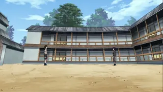

Наруто: Ураганные хроники
- Наруто 2
Тип
Сериал
Эпизоды
500
Жанры
Тема
Первоисточник
Манга
Сезон
Статус
Выпуск
с 15 февраля 2007 по 23 марта 2017
Рейтинг
PG-13
Возраст
16+
Длительность
23 мин. ~ серия
Студия
Озвучка
Режиссёр
Автор оригинала
Главные герои
Много невзгод и проблем встретил Наруто Узумаки
– великий ниндзя. Прошли экзамены на повышение квалификации, прошли
долгие годы, где горечь и боль, с переменным успехом, заменились на
радость и счастье. Наруто
стал взрослее, умнее, быстрее и сильнее. Предательство за
предательством его закалили, а его настоящие друзья определились в беде.
Теперь, после двух лет обучения у знаменитого на весь мир отшельника Джирайя, Узумаки готов к новым приключениям, ведь грядет новая эра.
К тому же, каждый из тех, кто окружал Наруто в его нелегком деле – выпускники школы ниндзя – тоже прошли квалификацию и кто-то стал тюнином или дзенином. К тому же, теперь они ученики трех великих санинов. Сакура стала работать под предводительством мадам Цунадэ, а Саскэ стал работать с Орочимару. Постепенно, всплывают старые тайны, которые мешают жить нормально. Надежда все еще есть, но грядет что-то более ужасающее – война синоби.
К тому же, каждый из тех, кто окружал Наруто в его нелегком деле – выпускники школы ниндзя – тоже прошли квалификацию и кто-то стал тюнином или дзенином. К тому же, теперь они ученики трех великих санинов. Сакура стала работать под предводительством мадам Цунадэ, а Саскэ стал работать с Орочимару. Постепенно, всплывают старые тайны, которые мешают жить нормально. Надежда все еще есть, но грядет что-то более ужасающее – война синоби.
Развернуть
Кадры

Связанное
Сериал
2012
Ответвление от оригинала
Коментарии